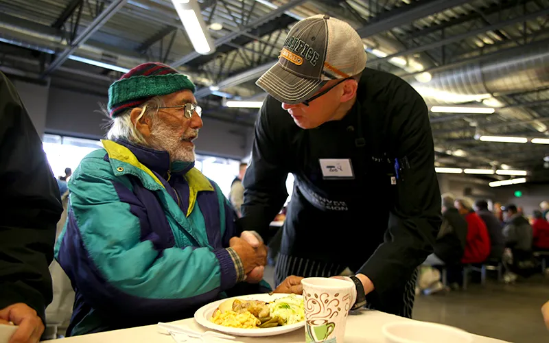

Pathways of Hope
Your monthly support will change lives and create lasting hope.
Pathways of Hope is the name of our online monthly giving program
Join Pathways of Hope
Help take someone from homelessness to
hope—and be there every step of the way.
Already a Member?
Thank you, for helping create lasting hope.
Log in here to view and manage your gifts!
As a Pathways of Hope monthly donor, your ongoing support will provide the resources someone experiencing homelessness needs to transform their life, including:
Emergency food and shelter
Clothing and hygiene items
Addiction recovery
Christian counseling
Job and life-skills training
Help with housing and much more

Know the Difference You Make
As part of this special group of monthly donors, you’ll receive regular updates, including:
- Stories of the lives you change
- Progress of our programs and services
- Ways your support helps our community
Help put homeless men and women
on the path to better lives
Give monthly and provide ongoing support to hurting and
homeless neighbors who are on the journey to transform their lives.
Have Questions? Contact Me Today!
My name is Iris Abraham, and I am your direct contact at the Mission for anything related to your monthly donations, including help with updating your gift amount or accessing your online donor account
CONTACT IRISOr call 303.331.2910